소방시설관리사 (2010-09-05 기출문제)
1과목: 방안전관리론
1. 연소와 가장 관련이 있는 화학반응은?
- 산화반응
- 환원반응
- 치환반응
- 중화반응
(정답률: 79%)

2. 가연성액체가 개방된 상태에서 증기를 계속 발생시키면서 연소가 지속될 수 있는 최저온도를 무이라고 하는가?
- 인화점
- 연소점
- 발화점
- 기화점
(정답률: 70%)
3. 일반적으로 공기 중 산소농도를 몇 vol% 이하로 감소시키면 연소상태의 중지 및 질식소화가 가능하겠는가?
- 15
- 21
- 25
- 31
(정답률: 77%)
4. 할로겐화합물 소화설비에 사용하는 소화약제가 아닌 것은?
- 할론 2402
- 할론1211
- 할론1301
- 할론1311
(정답률: 75%)
5. 방화구획의 효과와 관계 없는 것은?
- 화염의 제한
- 인명의 안전대피
- 화재하중의 감소
- 연기의 확산방지
(정답률: 60%)
6. 출화 가옥의 기둥, 벽 등은 발화부를 향하여 도괴되는 경향이 있으므로 이곳을 출화부로 추정하는 것을 무엇이라 하는가?
- 접염비교법
- 탄화심도비교법
- 도괴방향법
- 연소비교법
(정답률: 81%)
7. 화재실의 온도를 측정하는 데는 여러 종류의 온도계를 이용하여 측정하게 된다. 그렇다면 온도는 어느 계량 단위에 속하는가?
- 기본단위
- 유도단위
- 보조단위
- 특수단위
(정답률: 67%)
8. 포소화설비의 화재 적응성이 가장 낮은 대상물은?
- 건축물
- 가연성 고체류
- 가연성 가스
- 가연성 액체류
(정답률: 54%)
9. 우리나라에서의 화재급수와 그에 따른 화재분류가 틀린 것은?
- A급 - 일반화재
- B급 - 유류화재
- C급 - 가스화재
- D급 - 금속화재
(정답률: 80%)
10. 불연재료가 아닌 것은?
- 기와
- 석고보드
- 유리
- 콘크리트
(정답률: 60%)
11. 다음 중 주된 연소형태가 표면연소인 것은 어느 것인가?
- 알코올
- 숯
- 목재
- 에테르
(정답률: 76%)
12. 화재시 발생되는 연소가스 중 적은 양으로는 인체에 거의 해가 없으나 많은 양을 흡입하면 질식을 일으키며 소화약제로도 사용되는 가스는?
- CO
- CO2
- H2O
- H2
(정답률: 74%)
13. 다음의 할로겐 화합물 중 오존 파괴지수가 가장 큰 것은?
- Halon 104
- Halon 1211
- Halon 2402
- Halon 1301
(정답률: 47%)
14. 플래시 오버(flash over)를 옳게 설명한 것은?
- 도시가스의 폭발적 연소를 말한다.
- 휘발유 등 가연성 액체가 넓게 흘러서 발화한 상태를 말한다.
- 옥내 화재가 서서히 진행하여 열 및 가연성 기체가 축적되었다가 일시에 연소하여 화염이 크게 발생하는 상태를 말한다.
- 화재층의 불이 상부층으로 올라가는 현상을 말한다.
(정답률: 78%)
15. 갑작스런 화재발생시 인간의 피난 특성으로 틀린 것은?
- 본능적으로 평상시 사용하는 출입구를 사용한다.
- 최초로 행동을 개시한 사람을 따라서 움직인다.
- 공포감으로 인해서 빛을 피하여 어두운 곳으로몸을 숨긴다.
- 무의식중에 발화 장소의 반대쪽으로 이동한다.
(정답률: 71%)
16. 목재의 상태를 기준으로 했을 때 다음 중 연소 속도가 가장 느린 것은?
- 거칠고 얇은 것
- 각이 있고 얇은 것
- 매끄럽고 둥근 것
- 수분이 적고 거친 것
(정답률: 74%)
17. 페놀수지, 멜라민수지 등이 연소될 때 발생되며 눈, 코, 인후 및 폐에 매우 자극성이 큰 유독성 가스는?
- CO2
- SO2
- HBr
- NH3
(정답률: 54%)
18. 이산화탄소 소화약제의 저장 용기 충전비로서 적합하게 짝지어져 있는 것은?
- 저압식은 1.1이상, 고압식은 1.5 이상
- 저압식은 1.4이상, 고압식은 2.0 이상
- 저압식은 1.9이상, 고압식은 2.5 이상
- 저압식은 2.3이상, 고압식은 3.0 이상
(정답률: 75%)
19. 화재하중을 나타내는 단위는?
- kcal/kg
- ℃/m2
- kg/m2
- kg/kcal
(정답률: 72%)
20. 위험물 유별에 따른 그 성질의 연결이 틀린 것은?
- 제1류 위험물-산화성 고체
- 제2류 위험물-가연성 고체
- 제4류 위험물-인화성 액체
- 제6류 위험물-자기반응성 물질
(정답률: 77%)
21. 다음 중 유류 화재 시 수성막 포 소화약제와 혼합사용 시 소화효과를 높일 수 있는 가장 효과적인 소화 약제는?
- 분말 소화약제
- 화학포 소화약제
- 이산화탄소 소화약제
- 할로겐화합물 소화약제
(정답률: 51%)
22. 방화구조의 기준으로 맞는 것은?(오류 신고가 접수된 문제입니다. 반드시 정답과 해설을 확인하시기 바랍니다.)
- 철망모르타르로서 그 바름 두께가 2cm 이상인 것
- 두께 2.5cm 이상의 암면보온판 위에 석면 시멘트판을 붙인 것
- 시멘트모르타르 위에 타일을 붙인 것으로서 그 두께의 합계가 1.5cm 이상인 것
- 두께 1.2cm 이상의 석고판위에 석면 시멘트판을 붙인 것
(정답률: 9%)
23. 소화에 필요한 산소농도를 알 수 있다면 CO2소화약제 사용 시 최소 소화농도를 구하는 식은?
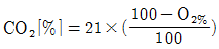
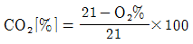
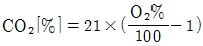
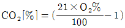
(정답률: 76%)
24. 전기에 의한 발화를 방지하기 위한 예방대책으로 옳지 않은 것은?
- 접지시설을 한다.
- 습도를 70% 이상으로 유지한다.
- 공기를 이온화한다.
- 부도체물질을 사용한다.
(정답률: 60%)
25. 황린, 적린이 서로 동소체라는 것을 증명하는 데 가장 효과적인 것은?
- 비중을 비교한다.
- 착화점을 비교한다.
- 유기용제에 대한 용해도를 비교한다.
- 연소생성물을 확인한다.
(정답률: 83%)
2과목: 소방수리학·약제화학 및 소방전
26. 지름이 5cm인 소방노즐에서 물제트가 40m/s의 속도로 건물벽에 수직으로 충돌하고 있다. 벽이 받는 힘은 몇 kgf인가?
- 230
- 250
- 320
- 280
(정답률: 35%)
27. 체적 2m3, 온도 20℃의 기체 1kg을 정압하에서 체적을 5m3로 팽창시켰다. 가한열량은 몇 KJ인가? (단, 기체의 정압비열은 2.06KJ/Kg∙K, 기체상수는 0.4881KJ/Kg∙K으로 한다.)
- 954
- 9⑤
- 889
- 863
(정답률: 19%)
28. 어떤 액체가 0.01m3의 체적을 갖는 실린더 속에서 50kPa의 압력을 받고 있다. 이때 압력이 100kPa으로 증가되었을 때 액체의 체적이 0.0099m3으로 축소되었다면 이액체의 체적탄성계수 K는 몇 kPa인가?
- 500
- 5,000
- 50,000
- 500,000
(정답률: 32%)
29. 어느 유체가 배관 내의 층류로 흐르고 있다. 지름은100mm이며, 동점성계수가 1.3×10-3cm2/s인 유체로서 층류로 흐를 수 있는 최대유량은 약 얼마인가? (단, 임계레이놀즈수는 2,100이다.)
- 21.44cm3/s
- 214.4cm3/s
- 21.44m3/s
- 2.144m3/s
(정답률: 27%)
30. 관 마찰계수가 0.022인 지름 50mm 관에 물이흐르고 있다. 이 관에 부차적 손실계수가 각각 10, 1.8인 밸브와 티(tee)가 결합되어 있을 경우 관의 상당관 길이는 몇 m인가?
- 24.3
- 24.9
- 25.4
- 26.8
(정답률: 26%)
31. 원심식 송풍기에서 회전수를 변화시킬 때 동력변화를 구하는 식으로 맞는 것은? (단, 변화 전후의 회전수를 각각 N1, N2 동력을 L1, L2로 표시한다.)
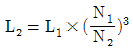
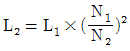
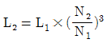
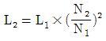
(정답률: 44%)
32. 질량 M, 길이 L, 시간 T로 표시할 때 운동량의 차원은?
- [MLT]
- [ML-1T]
- [MLT-2]
- [MLT-1]
(정답률: 40%)
33. 웨버수(Weber number)의 물리적 의미는?
- 관성력/압력
- 관성력/점성력
- 관성력/표면장력
- 관성력/탄성력
(정답률: 46%)
34. 점성계수가 0.101N∙s/m2, 비중이 0.85인 기름이 내경 300mm, 길이3km의 주철관 내부를 흐르며 유량은 0.0444m3/s이다. 이 관을 흐르는 동안 수두손실은 약 몇 m인가? (단, 물의 밀도는 850KG/m3이다.)(오류 신고가 접수된 문제입니다. 반드시 정답과 해설을 확인하시기 바랍니다.)
- 7.1
- 8.1
- 7.7
- 8.9
(정답률: 27%)
35. 펌프의 흡입양정이 4m이고 흡입관로의 손실수두가 2m일때 NPSH는 약 몇 m인가? (단, 수면 의 표준대기압(101.3kPa) 상태이고, 이 때의 포화 수증기압은 3300Pa이다.)
- 10
- 2
- 6
- 4
(정답률: 23%)
36. 표준대기압에서 진공압이 400mmHg일 때 절대압으로 약 몇 kPa인가? (단, 표준대기압은 101.3kPa, 수은의 비중은 13.6이다.)
- 53
- 48
- 154
- 149
(정답률: 23%)
37. 배관설비에서 상류 지점인 A지점의 배관을 조사 해 보니 지름 100mm, 압력 0.45MPa, 평균 유속 1m/s 이었다. 또 하류의 B지점을 조사해 보니 지름 50mm, 압력 0.4MPa 이었다면 두 지점 사이의 손실 수두는 몇 m인가?
- 4.94
- 5.87
- 8.67
- 10.87
(정답률: 19%)
38. 수압기에서 피스톤의 지름이 각각 10mm, 50mm 이고 큰 피스톤에 1,000N의 하중을 올려 놓으면 작은 피스톤에 얼마의 힘이 작용하게 되는가?
- 40N
- 400N
- 25,000N
- 245,000N
(정답률: 31%)
39. 물이 파이프 속을 꽉 차서 흐를 때, 정전 등의 원인으로 유속이 급격히 변하면서 물에 심한 압력 변화가 생기고 큰 소음이 발생하는 현상을 무엇이라 하는가?
- 수격 작용
- 서어징
- 캐비테이션
- 실속
(정답률: 49%)
40. 호수 수면 아래에서 지름 d인 공기방울이 수면으로 올라오면서 지름이 1.5배로 팽창하였다. 공기방울의 최초 위치는 수면에서 몇 m되는 곳인가? (단, 이 호수의 대기압은 750mmHg, 수은의 비중은 13.6 공기방울 내부의 공기는 Boyle의 법칙을 따른다고 한다.)
- 34.4
- 24.2
- 12.0
- 43.3
(정답률: 13%)
41. 일정전압의 직류전원에 저항을 접속하고 전류를 흘릴때 이 전류값을 20[%]증가시키기 위해서는 저항값을 몇 배로 하여야 하는가?
- 1.25배
- 1.20배
- 0.83배
- 0.80배
(정답률: 45%)
42. 그림과 같은 회로에서 전압계 ⓥ의 지시값은?
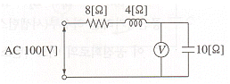
- 40[V]
- 50[V]
- 80[V]
- 100[V]
(정답률: 32%)
43. 그림과 같은 회로망에서 전류를 산출하는 식은?
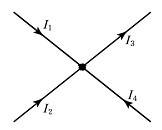
- I1+I2-I3+I4=0
- I1-I2-I3+I4=0
- I1+I2+I3+I4=0
- I1-I2-I3-I4=0
(정답률: 54%)
44. i=Imsiωt인 정현파에 있어서 순시값과 실효 값이 같아지는 위상은 몇 도인가?
- 30°
- 45°
- 50°
- 60°
(정답률: 44%)
45. 다음 그림과 같은 회로에서 R＝16Ω, L＝180mH, ω＝100rad/s일 때 합성임피던스는?
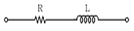
- 약 3[Ω]
- 약 5[Ω]
- 약 24[Ω]
- 약 34[Ω]
(정답률: 33%)
46. 200V 전원에 접속하면 1kW의 전력을 소비하는 저항을 100V 전원에 접속하였을 때 소비전력은?
- 250[W]
- 500[W]
- 750[W]
- 900[W]
(정답률: 31%)
47. 자체 인덕턴스가 각각 160mH, 250mH인 두 코일이 있다. 두 코일 사이의 상호 인덕턴스가 150mH이라면 결합계수는?
- 0.5
- 0.75
- 0.66
- 1.0
(정답률: 32%)
48. 피드백 제어에서 반드시 필요한 장치는?
- 구동장치
- 출력장치
- 입력과 출력을 비교하는 장치
- 안정도를 좋게 하는 장치
(정답률: 55%)
49. 변압기의 1차 권수가 10회, 2차 권수가 300회인 경우 2차 단자에서 1,500V의 전압을 얻고자 하는 경우 1차 단자에서 인가하여야 할 전압은?
- 50[V]
- 100[V]
- 220[V]
- 380[V]
(정답률: 55%)
50. 그림과 같이 저항 3개가 병렬로 연결된 회로에 흐르는 가지전류 I1, I2, I3는 몇 [A]인가?
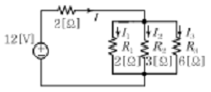
- I1=2, I2=4/3. I3=2/3
- I1=2/3, I2=1/3, I3=2
- I1=3, I2=2, I3=1
- I1=1, I2=2, I3=3
(정답률: 34%)
3과목: 소방관련법령
51. 특정소방대상물에서 방화관리업무를 대행할 수 있는 사람은?
- 소방시설관리업을 등록한 자
- 소방공사 감리업을 등록한 자
- 소방시설 설계업을 등록한 자
- 소방시설 공사업을 등록한 자
(정답률: 65%)
52. 시도지사는 등록신청을 받은 소방시설업의 업종별 자본금, 기술인력 및 장비가 소방시설업의 업종별 등록 기준에 적합하다고 인정되는 경우에는 등록신청을 받은 날부터 몇 일 이내에 소방 시설업 등록증 및 소방 시설업 등록수첩을 교부하여야하는가?
- 3
- 5
- 10
- 15
(정답률: 22%)
53. 소방기술자의 소방시설 공사현자의 배치기준으로 옳은 것은?
- 기계분야의 소방설비기사는 기계분야 소방시설의 부대시설에 대한 공사에 배치할 수 없다.
- 비상콘센트설비 및 비상방송설비의 공사는 전기분야의 소방설비기사가 담당한다.
- 전기분야의 소방설비기사는 기계분야 소방시설에 부설되는 자동화재탐지설비의 공사에 배치하여서는 아니 된다.
- 무선통신보조설비의 공사는 기계분야의 소방설비기사도 배치할 수 있다.
(정답률: 57%)
54. 정당한 사유 없이 며칠 이상 소방사별 공사를 계속하지 아니한 때에는 도급계약을 해지 할 수 있는가?
- 10일
- 20일
- 30일
- 60일
(정답률: 65%)
55. 소방시설관리업의 장비기준에서 소방시설별 장비가 잘못 연결된 것은?
- 소화기구 - 저울
- 옥내소화전설비 - 절연저항계
- 자동화재탐지설비 - 열감지기시험기
- 제연설비 - 연기감지기시험기
(정답률: 27%)
56. 원활한 소방 활동을 위한 소방용수시설 및 지리조사의 실시횟수 기준으로 옳은 것은?
- 월 1회 이상
- 3개월에 1회 이상
- 6개월에 1회 이상
- 연 1회 이상
(정답률: 55%)
57. 소방시설관리사가 다른 사람에게 자격증을 빌려주었을 때 제 1차 행정처분기준은?
- 자격정지 3월
- 자격정지 6월
- 자격정지 2년
- 자격취소
(정답률: 60%)
58. 소방시설관리사 시험의 시험위원에 될 수 없는 사람은?
- 소방관련학 석사학위를 가진 자
- 소방관련학과 조교수이상으로 2년이상 재직한 자
- 소방시설관리사
- 소방기술사
(정답률: 52%)
59. 특수가연물에 해당하는 것은?
- 사류
- 알코올류
- 황산
- 동식물 유류
(정답률: 62%)
60. 방염대상물품에 해당되지 않는 것은?
- 무대막
- 전시용 합판
- 병원에서 사용하는 침구류
- 카페트
(정답률: 63%)
61. 정당한 사유없이 관계공무원의 소방특별조사를 거부, 방해 또는 기피한 자의 벌칙은?
- 200만원 이하의 벌금
- 200만원 이하의 과태료
- 200만원 이하의 과태료
- 300만원 이하의 벌금
(정답률: 39%)
62. 특정소방대상물의 소방시설은 정기적으로 점검을 받아야 하며, 그 결과를 누구에게 보고하여야 하는가?
- 시도지사
- 소방방재청장
- 한국소방안전협회장
- 소방본부장 또는 소방서장
(정답률: 64%)
63. 위험물을 취급하는 건축물의 조명설비의 적합기준이 아닌 것은?
- 연소의 우려가 없는 장소에 설치할 것
- 가연성 가스 등이 체류할 우려가 있는 장소의 조명등은 방폭 등으로 할 것
- 전선은 내화내열전선으로 할 것
- 점멸스위치는 출입문 바깥부분에 설치할 것
(정답률: 33%)
64. 지정수량 10배 미만의 위험물제조소의 보유공지 너비는?
- 3m 이상
- 5m 이상
- 7m 이상
- 9m 이상
(정답률: 57%)
65. 예방규정을 정하여야 할 제조소 등으로 틀린 것은?
- 지정수량10배 이상의 제조소
- 지정수량200배 이상의 옥외 탱크 저장소
- 지정수량 150배 이상의 옥외저장소
- 지정수량 10배 이상의 일반취급소
(정답률: 45%)
66. 특정소방대상물의 분류 중 숙박시설에 해당되는 것은?
- 수녀원
- 독서실
- 휴양콘도미니엄
- 고시원
(정답률: 33%)
67. 지하가 중 터널로서 길이가 2000m인 곳에 설치해야 할 소화활동설비가 아닌 것은? (문제 오류로 실제 시험에서는 2, 4번이 정답처리 되었습니다. 여기서는 2번을 누르면 정답 처리 됩니다.)
- 비산콘센트설비
- 제연설비
- 무선통신보조설비
- 연결살수설비
(정답률: 60%)
68. 소방용수시설 소화기구 및 설비 등의 설치명령을 위반한 자에 대한 과태료 처분 기준으로 틀린것은?
- 1차 위반시 : 30만원
- 2차 위반시 : 100만원
- 3차 위반시 : 150만원
- 4차 위반시 : 200만원
(정답률: 47%)
69. 소방시설관리사 자격의 결격사유가 아닌 것은?
- 금치산 선고를 받은 자
- 한정치산 선고를 받은 자
- 파산선고를 받은자로 복권된 자
- 형의 집행유예를 받고 그 기간중에 있는 자
(정답률: 69%)
70. 다음 시설 중 하자 보수의 보증 기간이 틀린 것은?
- 유도등
- 유도표지
- 비상조명등
- 스프링클러 설비
(정답률: 61%)
71. 소방기본법에 의해서 소방방재청정, 소방본부장 또는 소방서장은 구조대를 편성, 운영하여야 하는 바, 특수구조대에 속하지 않는 것은?
- 화학구조대
- 항공구조대
- 수난구조대
- 고속국도구조대
(정답률: 23%)
72. 방화관리자 또는 공동방화관리자를 선임할 때 방화관리자 선임신고서에 첨부할 서류에 해당하지 않는 것은?
- 소방시설관리사 자격수첩
- 자체소방대장임을 증명하는 서류
- 소방안전관리학과를 졸업한 경우 졸업증명서
- 방화관리자를 겸임할 수 있는 안전관리자로 선임된 사실을 증명할 수 있는 서류
(정답률: 33%)
73. 전문 소방시설설계업을 등록하고자 할 때 주된 기술인력에 대한 기준에 맞는 것은?
- 기계분야 또는 전기분야 소방설비기사 자격자 1인 이상
- 기계분야 소방설비기사 자격자 1인 이상과 전기분야 소방설비산업기사 자격자 1인 이상
- 기계분야와 전기분야를 겸하여 취득한 경우에는 겸하여 취득한 소방설비기사 자격자 1 인 이상
- 소방기술사 1인 이상
(정답률: 56%)
74. 스프링클러설비를 설치하여야 하는 특정소방대상물로서 틀린 것은?
- 복합건축물 또는 교육연구시설 내에 있는 학생수용을 위한 기숙사로서 연면적 5000m2이상 인 경우에는 전 층
- 층수가 11층 이상인 특정소방대상물의 경우에는 전 층
- 정신보건시설 및 숙박시설이 있는 수련시설로서 연면적 500m2 이상인 경우에는 전 층
- 지하가로서 연면적 1000m2 이상인 것
(정답률: 32%)
75. 다음 중 소방신호가 아닌 것은?
- 경계신호
- 피난신호
- 발화신호
- 해제신호
(정답률: 53%)
4과목: 위험물의 성상 및 시설기준
76. 제3류 위험물인 칼륨의 특성으로 맞지 않는 것은?
- 물보다 비중이 크다.
- 은백색의 광택이 있는 무른 경금속이다.
- 연소 시 보라색 불꽃을 내면서 연소한다.
- 융점이 63.5℃이고 비점은 762℃이다.
(정답률: 40%)
77. 제2류 위험물(인화성 고체는 제외)의 주의사항 및 게시판의 표시내용으로 맞는 것은?
- 적색 바탕에 백색 문자의 “화기주의”
- 청색 바탕에 백색 문자의 “물기엄금”
- 적색 바탕에 백색 문자의 “화기엄금”
- 청색 바탕에 백색 문자의 “물기주의”
(정답률: 53%)
78. 황린의 위험성에 대한 설명으로 맞지 않는 것 은?
- 발화점은 34℃로 낮아 매우 위험하다.
- 증기는 유독하며 피부에 접촉되면 화상을 입는다.
- 상온에 방치하면 증기를 발생시키고 산화하여 발열한다.
- 백색 또는 담황색의 고체로 물에 잘 녹는다.
(정답률: 54%)
79. 물에 잘 녹지 않고 물보다 가벼우며 인화점이 가장 낮은 위험물은?
- 아세톤
- 디에틸에테르
- 이황화탄소
- 산화프로필렌
(정답률: 37%)
80. 칼륨(K)의 보호액으로 적당한 것은?
- 등유
- 에탄올
- 아세트산
- 톨루엔
(정답률: 61%)
81. 황린이 자연발화하기 쉬운 이유는 어느 것인가?
- 비등점이 낮고 증기의 비중이 작기 때문
- 녹는점이 낮고 상온에서 엑체로 되어 있기 때문
- 산소와 결합력이 강하고 착화온도가 낮기 때문
- 인화점이 낮고 가연성 물질이기 때문
(정답률: 38%)
82. 옥내저장소의 바닥을 물이 스며들지 못하는 구조로 해야 할 위험물이 아닌 것은?
- 제2류 위험물
- 제3류 위험물
- 제6류 위험물
- 알칼리금속의 과산화물
(정답률: 40%)
83. 대량의 제4류 위험물 화재에 있어서 물로 소화하는 것은 적절하지 못한데 그 이유는 무엇인가?
- 가연성 가스를 발생한다.
- 연소면을 확대시킨다.
- 인화점이 강하다.
- 물이 열분해한다.
(정답률: 58%)
84. 에테르A, 아세톤B, 피리딘C, 톨루엔D라고 할 때 다음 중 인화점이 낮은 것부터 순서대로 되어 있는 것은?
- A - B - D - C
- A - C - B - D
- B - C - D - A
- D - C - B - A
(정답률: 41%)
85. 톨루엔(C6H5CH3)의 일반적 성질에 대하여 다음 중 틀린 것은?
- 증기밀도는 공기보다 가볍다.
- 인화점이 낮고 물에는 녹지 않는다.
- 휘발성이 있는 무색 투명한 액체이다.
- 증기는 독성이 있지만 벤젠에 비해 약한 편이다.
(정답률: 50%)
86. 자체에서 산소를 함유하고 있어 공기 중의 산소를 필요로 하지 않고 자기 연소하는 것은 어느 것인가?
- 카바이드
- 생석회
- 초산에스테르류
- 질산에스테르류
(정답률: 61%)
87. 니트로셀룰로오스의 저장 및 취급상 틀린 것은?
- 열을 멀리하고 찬 곳에 저장한다.
- 햇빛이 잘 들어오는 곳에 저장한다.
- 알코올로 습면하고 안정제를 가하여 저장한다.
- 타격, 마찰을 하지 않는 곳에 저장한다.
(정답률: 53%)
88. 과산화수소의 성질에 관한 설명이다. 옳지 않은 것은?
- 순수한 것은 점성이 있는 무색 액체이며, 다량이면 청색빛깔을 띤다.
- 순도가 높은 것은 불순물, 구리, 은, 백금 등의 미립자에 의하여 폭발적으로 분해한다.
- 에테르에 녹지 않으며, 벤젠에는 녹는다.
- 강력한 산화제이나 환원제로서 작용하는 경우도 있다.
(정답률: 37%)
89. 지정수량의 몇 배 이상의 위험물을 취급하는 제조소에는 화재예방을 위한 예방규정을 정하여야 하는가?
- 10
- 20
- 30
- 40
(정답률: 62%)
90. 위험물 제조소의 언전거리를 30m 이상으로 하여야 하는 경우에 해당하지 않는 것은?
- 학교로서 수용인원이 200명 이상인 것
- 치과병원으로서 수용인원이 200명 이상인 것
- 요양병원으로서 수용인원이 200명 이상인 것
- 공연장으로서 수용인원이 200명 이상인 것
(정답률: 44%)
91. 위험물 제조소의 건축물의 구조로 잘못된 것은?
- 벽, 기둥, 서까래 및 계단은 난연재료로 할 것
- 지하층이 없도록 할 것
- 지붕은 폭발력이 위로 방출될 정도의 가벼운 불연재료로 덮을 것
- 연소의 우려가 있는 외벽에 설치하는 출입구에는 수시로 열 수 있는 자동폐쇄식의 갑종방화문을 설치할 것
(정답률: 52%)
92. 다음은 위험물 제조소에 설치하는 안전장치이다. 이 중에서 위험물의 성질에 따라 안전밸브의 작동이 곤란한 가압설비에 한하여 설치하는 것은?
- 자동적으로 압력의 상승을 정지시키는 장치
- 감압축에 안전밸브를 부착한 감압밸브
- 안전밸브를 병용하는 경보장치
- 파괴판
(정답률: 55%)
93. 위험물을 저장한 탱크에서 화재가 발생하였을때 Slop over 현상이 일어날 수 있는 위험물은?
- 제1류 위험물
- 제2류 위험물
- 제3류 위험물
- 제4류 위험물
(정답률: 56%)
94. 위험물 저장소로서 옥내저장소의 저장창고의 구조 및 설비로 옳은 것은?
- 지면에서 처마까지의 높이가 8m미만인 단층건축물로 하고 그 바닥은 지반면보다 낮게 하여야 한다.
- 지면에서 처마까지의 높이가 8m미만인 단층건축물로 하고 그 바닥은 지반면보다 높게 하여야 한다.
- 지면에서 처마까지의 높이가 6m미만인 단층건축물로 하고 그 바닥은 지반면보다 낮게 하여야 한다.
- 지면에서 처마까지의 높이가 6m미만인 단층건축물로 하고 그 바닥은 지반면보다 높게 하여야 한다.
(정답률: 51%)
95. 주유취급소의 표시 및 게시판에서 “주유 중 엔진정지”라고 표시하는 게시판의 색깔로서 맞는 것은?
- 황색 바탕에 흑색 문자
- 흑색 바탕에 황색 문자
- 적색 바탕에 백색 문자
- 백색 바탕에 적색 문자
(정답률: 45%)
96. 위험물을 배합하는 제1종 판매취급소의 실의 기준에 적합하지 않은 것은?
- 바닥면적을 6m2이상 15m2 이하로 할 것
- 내화구조 또는 불연재료로 된 벽을 구획할 것
- 바닥에는 적당한 경사를 두고, 집유설비를 할 것
- 출입구에는 갑종방화문 또는 을종방화문을 설치 할 것
(정답률: 40%)
97. 위험물을 운반할 때 위험물의 성질 등을 운반용기 및 포장의 외부에 주의사항을 표시토록 되어있는데 다음 중에서 틀린 것은?
- 제2류 위험물에는 “화기주의”
- 제3류 위험물에는 “물기엄금”
- 제4류 위험물에는 “화기주의”
- 제5류 위험물에는 “화기엄금, 충격주의”
(정답률: 50%)
98. 위험물의 위험등급 I의 위험물이 아닌 것은?
- 아염소산염류
- 마그네슘분
- 황린
- 에테르
(정답률: 55%)
99. 위험물의 저장기준으로 틀린 것은?
- 지하저장탱크의 주된 밸브는 이송할 때 이외에는 폐쇄하여야 한다.
- 이동탱크저장소에는 설치허가증을 비치하여야 한다.
- 산화프로필렌을 저장하는 이동저장탱크에는 불연성 가스를 봉입하여야 한다.
- 옥외저장탱크 주위에 설치된 방유제의 내부에 물이나 유류가 고였을 경우 즉시 배출하도록 하여야 한다.
(정답률: 42%)
100. 위험물 안전 관리자를 선임하지 않고 위험물제조소등의 허가를 받은 자에 대한 벌칙은?
- 500만원 이하의 벌금
- 1년 이하의 징역 또는 500만원 이하의 벌금
- 1년 이하의 징역 또는 1,000만원 이하의 벌금
- 3년 이하의 징역 또는 1,500만원 이하의 벌금
(정답률: 14%)
5과목: 소방시설의 구조원리
101. 유도등은 소방대상물의 용도별 적응하는 유도등을 설치하여야 한다. 다음 중 공연장, 위락시설, 일반 숙박시설, 근린생활시설(주택용도 제외)등에 공통적으로 설치하여야 하는 유도등은?
- 소형 피난구유도등
- 통로유도등
- 객석유도등
- 중형 피난구유도등
(정답률: 52%)
102. 비상방송설비 음향장치의 음량조정기를 설치하는 경우 음량조정기의 배선은?
- 단선식
- 2선식
- 3선식
- 4선식
(정답률: 66%)
103. 다음 중 지하층, 무창층 등으로서 환기가 잘 되지 아니하거나 실내면적이 40[m2]미만인 장소, 감지기의 부착면과 실내바닥과의 길이가[m] 이하인 곳으로서 일시적으로 발생한 열, 연기 또는 먼지 등으로 인하여 회재를 발신할 우려가 있는 장소에 설치 가능한 적응성이 있는 감지기의 종류 에 포함되지 않는 것은?
- 정온식 감지선형감지기
- 보상식 스포트형감지기
- 분포형감지기
- 불꽃감지기
(정답률: 54%)
104. 다음 중 백화점에 설치하는 휴대용 비상조명등의 설치기준으로 적합한 것은?
- 수평거리 25[m] 이내마다 2개 이상 설치
- 보행거리 25[m] 이내마다 3개 이상 설치
- 수평거리 50[m] 이내마다 2개 이상 설치
- 보행거리 50[m] 이내마다 3개 이상 설치
(정답률: 53%)
1⑤. 천장의 높이가 2[m] 이하인 회의실에 청각장애인용 시각경보장치를 설치하고자 한다. 시각경보장치는 천장으로부터 몇[m] 이내에 설치하여야 하는가?
- 0.1[m]
- 0.15[m]
- 1.2[m]
- 0.25[m]
(정답률: 63%)
106. 누전경보기의 변류기(ZRC)는 경계전로에 정격전류를 흘리는 경우 그 경계전로의 전압강하는 몇 [V] 이하이어야 하는가? (단, 경계전로의 전선을 그 변류기에 관통시키는 것은 제외한다.)
- 0.3[V]
- 0.5[V]
- 1.0[V]
- 3.0[V]
(정답률: 33%)
107. 다음 중 무선통신보조설비의 주회로 전원이 정상인지 여부를 확인하기 위해 증폭기 전면에 설치하는 것은?
- 전압계 및 전류계
- 전압계 및 표시등
- 회로시험계
- 전류계
(정답률: 58%)
108. 다음( ㉮ ), (㉯ )에 들어갈 내용으로 알맞은 것은?
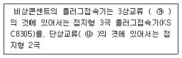
- ㉮ 200[V], ㉯ 100[V]
- ㉮ 380[V], ㉯ 110[V]
- ㉮ 220[V], ㉯ 200[V]
- ㉮ 380[V], ㉯ 220[V]
(정답률: 67%)
109. 부동층전방식에 의하여 사용할 때 각 전해조(電澥槽)에서 일어나는 전위차를 보정하기 위하여 1~3개월마다 1회 정전압으로 충전하여 각 전해 조의 용량을 균일화하기 위하여 충전하는 방식을 무엇이라고 하는가?
- 세류충전
- 정전류충전
- 부통충전
- 균등충전
(정답률: 56%)
110. 계단, 경사로(엘리베이터 경사로 포함)에 대하여 별도로 경계구역을 설정하되, 하나의 경계구역의 높이는 몇[m] 이하로 하여야 하는가?
- 15[m]
- 30[m]
- 45[m]
- 50[m]
(정답률: 47%)
111. 물분무 소화설비에서 차량이 주차하는 장소의 바닥면은 배수구를 향하여 얼마 이상의 기울기를 유지하 여야 하는가?
- 1/100
- 2/100
- 3/100
- 5/100
(정답률: 54%)
112. 할로겐화합물 소화약제의 저장용기는 어떠한 장소에 설치, 유지하여야 하는가?
- 온도에 무관하니까 아무 곳이나 좋다.
- 0℃ 이상인 장소는 다 적당하다.
- 상온 이하이면 다 좋다.
- 온도가 40℃ 이하이고, 온도변화가 적은 곳이 좋다.
(정답률: 69%)
113. 이산화탄소 소화설비에 사용되는 고압식 이산화탄소 소화약제 저장용기의 충전비는 얼마인가?
- 1.5이상 1.9이하
- 1.2이상 1.5이하
- 1.0이상 1.3이하
- 0.8이상 1.0이하
(정답률: 68%)
114. 스프링클러헤드 설치방법 중 살수가 방해되지않게 하기 위해서는 헤드로부터 반경 몇 cm 이상의 공간을 보유해야 하는가?
- 30cm
- 40cm
- 50cm
- 60cm
(정답률: 48%)
115. 포소화설비에 사용되는 펌프의 양정(H)은 다음 식에 따라 산출한 수치 이상이 되도록 해야 한다. 각 요소에 해당하는 설명으로 가장 거리가 먼 것은?
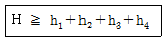
- h1은 방출구의 설계압력 환산수두 또는 노즐선단의 방사압력 환산수두
- h2는 배관의 마찰손실수두
- h3은 펌프흡입구의 하단에서 최상부에 있는 포방출구까지의 수지거리 즉 낙차
- h4는 헤드의 마찰손실수두
(정답률: 49%)
116. 간이 스프링클러설비에 설치하는 간이형 스프링클러헤드 하나의 수평거리는 m 이하로 하는가?
- 1.7
- 2.1
- 2.3
- 3.7
(정답률: 39%)
117. 소화용수설비에 설치하는 소화수조의 소요수량이 50m3인 경우 가압송수장치의 1분당 송수량은 몇 m3/min 이상이어야 하는가?
- 1.1
- 2.2
- 3.3
- 5.5
(정답률: 34%)
118. 연소할 우려가 있는 부분에 드렌처설비를 설치하였다. 한 개의 제어밸브에 드렌처헤드 5개씩 2개밸브로 설치하였을 경우에 드렌처 설비에 필요한 수원의 수량은 얼마 이상이어야 하는가?
- 2m3
- 4m3
- 8m3
- 16m3
(정답률: 48%)
119. 소방대상물의 설치장소가 지하층에 적응되는 피난기구는 어느 것인가?
- 피난사다리
- 미끄럼대
- 구조대
- 피난교
(정답률: 57%)
120. 지하가의 바닥면적이 3500m2이다. 연결송수관 설비의 방수구는 소방대상물 각 부분으로부터 수평거리 몇 m 이하가 되도록 설치하여야 하는가?
- 25m
- 30m
- 40m
- 50m
(정답률: 39%)
121. 스프링클러설비의 배관에 대한 설명으로 옳지 않은 것은?
- 주차장의 스프링클러설비는 습식 이외의 방식으로 한다.
- 습식 스프링클러설비는 헤드를 향하여 상향으로 수평주행배관의 기울기를 1/500 이상으로 한다.
- 급수배관에 설치되는 탬퍼스위치는 감시제어반 또는 수신기에서 동작의 유무확인을 할 수 있어야 한다.
- 일제개방밸브를 사용하는 스프링클러설비에서는 일제개방밸브 2차측에 개폐표시형 밸브를 설치하여야 한다.
(정답률: 46%)
122. 할론1301 소화약제의 소화효과와 가장 거리가 먼 것은?
- 냉각소화
- 질식소화
- 가연물 제거소화
- 연쇄반응의 억제소화
(정답률: 58%)
123. 이산화탄소 소화설비의 자동식 기동장치의 설치 기준으로 적합하지 않은 것은?
- 기동장치는 장동화재탐지설비의 감지기의 작동과 연동하여야 할 것
- 자동식 기동장치에는 수동으로도 가동할 수 있는 구조로 할 것
- 가스압력시 기동용 가스용기의 용적은 1ℓ 이상으로 할 것
- 기동용 가스용기에 저장하는 이산화탄소의 충전비는 1.3 이상으로 할 것
(정답률: 44%)
124. 연결 살수설비에 관한 설명 중 맞지 않는 것은?
- 송수구는 반드시 65mm의 쌍구형으로만 하여야 한다.
- 선택밸브는 화재시 연소의 우려가 없는 장소에 설치한다.
- 헤드는 천장 또는 반자의 실내에 면하는 부분에 설치한다.
- 개방형 헤드 사용시 주배관 중 물이 잘 빠질 수 있는 위치에 자동배수밸브를 설치한다.
(정답률: 55%)
125. 특별피난계단 부속실 등에 설치하는 급기가압방식 제연설비의 측정, 시험, 조정 항목을 열거한 것이다, 맞지 않는 것은?
- 출입문의 크기, 개폐방향이 설계도면과 일치하는지 여부 확인
- 출입문과 바닥사이의 틈새가 균일한지 여부 확인
- 화재감지기 동작에 의한 설비작동여부 확인
- 피난구의 설치위치 및 크기의 적정여부 확인
(정답률: 40%)